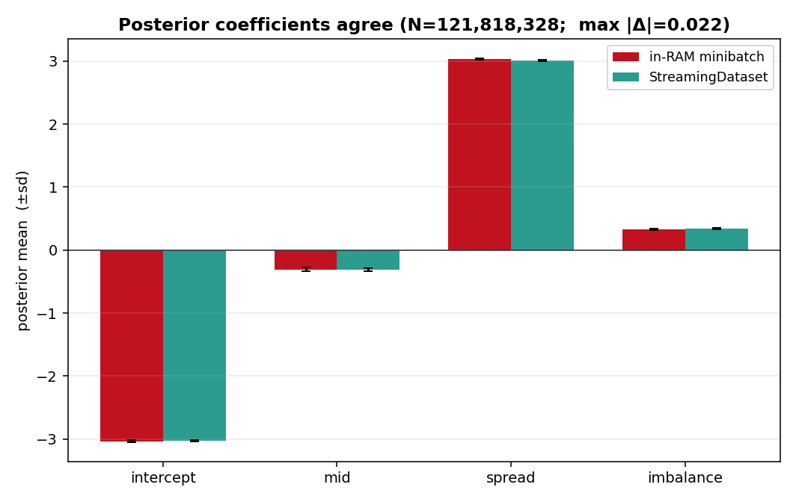
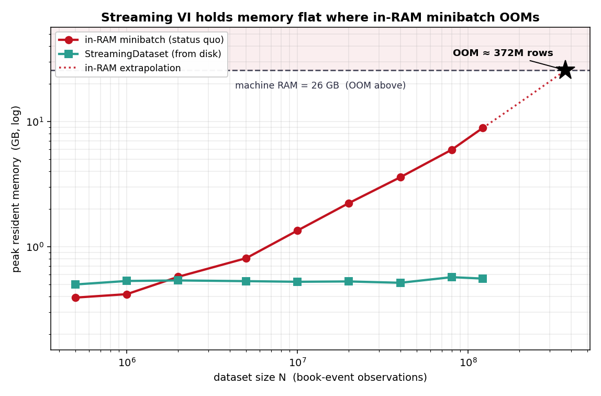

This week the goal is to let minibatch ADVI stream data from disk, so memory
usage does not grow with the number of rows. This matters because
pm.Minibatch (at least in the PyMC version I'm building against)
still expects the full array to be in memory — which is exactly the case
where minibatching is supposed to help but often can't.
Testing it on 122 GB of order-book data
Once the interface was mostly working, I wanted to test it on something real. I
happened to have a large Kalshi L2 order book dataset I'd collected for a
separate market-microstructure project, and it was a good stress test because it
does not fit comfortably in memory. The raw data is 122.67 GB — about 57
days from 2026-04-07 to 2026-06-04, across 2,685 files. I folded the raw
book_delta events back into book states and turned each one into a
small feature row (mid, spread, imbalance, and the next-move label), which gave
me about 121.8 million rows. Those rows are tiny — about 17 bytes each
— so the training table itself is only a couple of GB, even though the raw
data is huge.
For the test model, I used a simple logistic regression:
logit P(next mid-price move is up)
= b0 + b1·mid + b2·spread + b3·imbalance
and fit it with ADVI using minibatches of size 4096.
The posteriors drifted — and nothing crashed
I expected the streaming version and the in-RAM baseline to give basically the
same posterior. They did not. As I increased N, the posterior kept
drifting farther from the in-RAM baseline: max|Δ| was about
0.045 at 1M rows, but grew to 1.65 by 26M rows.
The worst part was that nothing crashed. There was no error, no warning, and no obvious sign that anything was wrong. It just silently gave me the wrong posterior, which is much more dangerous than a loud failure.
It was the shuffle story
After digging into it, the issue turned out not to be the math in ADVI or a bug in reading files. It was the shuffle story. The order book data is naturally sorted by time. A bounded shuffle buffer can only do local, block-like shuffling: rows are random inside the window, but the window itself still moves forward through time. So the minibatches stop being a fair sample of the whole dataset — each one is really just a single slice of time. The gradients become biased, and ADVI converges to a different posterior.
A simple way to think about it is a deck of cards sorted by suit. If you only shuffle the top few cards before dealing, the hands will still come out in big suit clusters.
The important design lesson is that a bounded buffer cannot magically fix
globally ordered data unless we do an O(N) full-data shuffle. But if we force
that inside StreamingDataset, it is no longer really single-pass
streaming — it becomes an offline step you run once up front. So this is
not really a bug; it is an API contract.
The fix: pre-shuffle once
The fix was to pre-shuffle the whole table once on disk. Since the rows are so
small, doing it offline was cheap and I only had to do it once. After that,
sequential streaming behaved the way I expected. At 20M rows,
max|Δ| dropped from 0.69 to 0.027, and over the full run it
stayed under 0.07. At 122M rows, the difference was only 0.022.

Why it matters: memory stays flat
This also showed the main benefit. Streaming stayed almost flat — around 0.5 GB, still only 0.57 GB at 122M rows — while the in-RAM baseline climbed straight to 9.1 GB (it keeps every row in memory as float64, so it is much bigger than the 17-byte rows on disk), about 16x higher. From that measured slope, a 24 GiB machine (about 26 GB) would run out of memory around 372M rows.

What went into the PR
For the PR, I added a bounded shuffle_buffer option for normal
streaming use, but the docstring now makes the contract explicit: if the data
has a meaningful global order, the user needs to pre-shuffle it first. I also
added total_size="auto", so finite datasets can automatically infer
N from metadata, for example from Parquet files, while truly
infinite streams can still provide it manually.
from pymc.variational.streaming import (
StreamingDataset,
shuffle_buffer,
parquet_source,
)
# Pre-shuffle once on disk, then stream shuffled minibatches:
ds = StreamingDataset(
shuffle_buffer(
parquet_source("shuffled/"),
buffer_size=1_000_000,
batch_size=4096,
seed=0,
),
batch_size=4096,
sample_shape=(4,), # 3 features + 1 observed column
total_size="auto", # infer N from Parquet metadata
)
with pm.Model():
b = pm.Normal("b", 0.0, 3.0, shape=4)
buf = ds.as_tensor()
logit = (
b[0]
+ b[1] * buf[:, 0]
+ b[2] * buf[:, 1]
+ b[3] * buf[:, 2]
)
pm.Bernoulli(
"up",
logit_p=logit,
observed=buf[:, 3],
total_size=ds.total_size,
)
approx = pm.fit(20_000, method="advi", callbacks=[ds.fit_callback()])
The main takeaway for me is that streaming VI needs a real shuffle story. A buffer alone is not enough when the data is ordered.
Next, I'm going to finalize the API with my mentors, Rob and Chris, and then open the upstream PR.
Links. GSoC project page · PyMC source · ADVI paper (Kucukelbir et al. 2017) · Mentors @zaxtax · @fonnesbeck